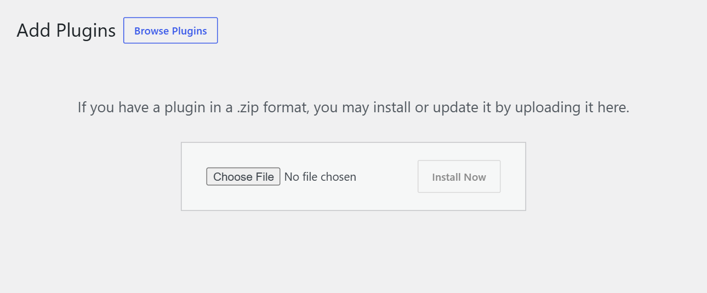
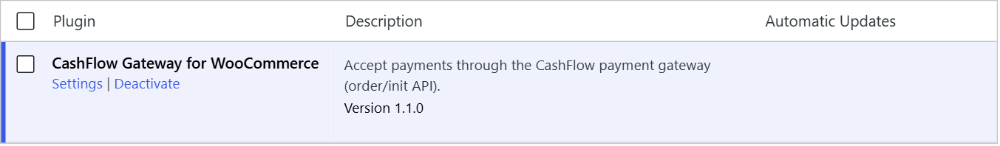
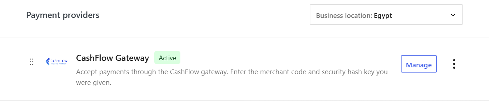
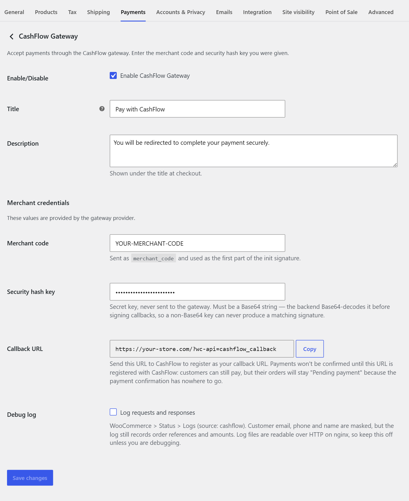
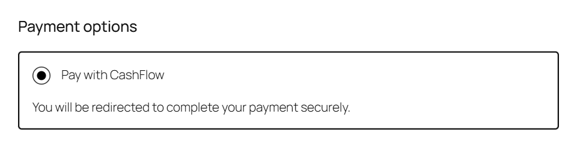
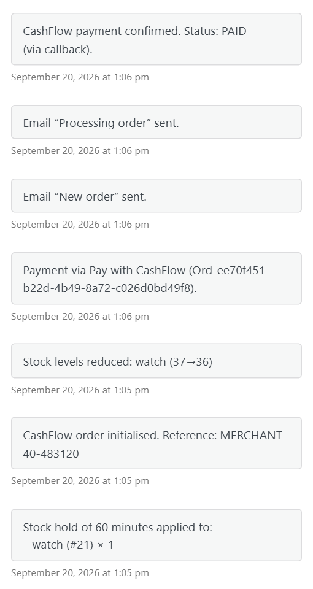

CashFlow WooCommerce Plugin
Accept online payments in your WooCommerce store through the CashFlow payment gateway. Customers pay on CashFlow's secure hosted payment page, and their orders update automatically in WooCommerce.
Hosted payment page
Card details are entered on CashFlow's page, never on your store.
Automatic order updates
Paid, failed and refunded payments update the WooCommerce order for you.
Works with any checkout
Works with both the new block checkout and the classic checkout.
Self-healing
An hourly check recovers orders whose payment notification never arrived.
How a payment works
Knowing the flow makes setup and troubleshooting much easier. The most important step is step 6: the order is only marked as paid when CashFlow notifies your store through the callback URL.
- The customer places an order and chooses CashFlow at checkout.
- The plugin registers the order with CashFlow (amount, currency, order reference). The order is set to Pending payment.
- The customer is redirected to CashFlow's hosted payment page.
- The customer pays on that page.
- CashFlow sends the customer back to your store's thank-you page.
- CashFlow notifies your store's callback URL with the result. The plugin verifies the notification's signature and checks that the amount matches the order before updating its status.
Before you start
Compatibility
| Requirement | Version / value |
|---|---|
| WooCommerce | 7.0 or later (tested up to 9.9) |
| WordPress | Any version supported by your WooCommerce release |
| PHP | 7.4 or later |
| Store currency | Egyptian Pound (EGP) |
| Site address | https://, reachable from the internet |
| Checkout | Block-based (Cart & Checkout blocks) or classic shortcode checkout |
What you need from CashFlow
Contact CashFlow to open a merchant account. You will receive:
| Credential | What it is |
|---|---|
| Merchant code | Identifies your store to CashFlow on every payment. |
| Security hash key | A secret key used to sign payment requests and verify CashFlow's notifications. It is a Base64 string. Treat it like a password: never share it or email it in plain text. |
You will also need the plugin file, cashflow-gateway-for-woocommerce-1.1.0.zip.
Installation
- Open the plugin uploader Log in to WordPress as an administrator and go to Plugins›Add New Plugin, then click Upload Plugin at the top of the page.
-
Upload the zip file
Click Choose File, select
cashflow-gateway-for-woocommerce-1.1.0.zip, then click Install Now. Upload the zip exactly as you received it; do not unzip it first.
The plugin upload screen. -
Activate the plugin
When the installation finishes, click Activate Plugin. CashFlow Gateway for WooCommerce now appears in your plugins list as active.

The plugin after activation. The Settings link takes you straight to the CashFlow settings.
cashflow-gateway-for-woocommerce folder into wp-content/plugins/ over SFTP, then activate the plugin from Plugins.
Updating to a new version
Upload the new zip the same way. WordPress asks whether to replace the installed version; choose Replace current with uploaded. Your settings are kept.
Setup and configuration
Go to WooCommerce›Settings›Payments and click Manage (or Set up) next to CashFlow Gateway.


Settings reference
| Field | Description | Default |
|---|---|---|
| Enable/Disable | Shows CashFlow as a payment option at checkout. | Off |
| Title | The payment method name customers see at checkout. | Pay with CashFlow |
| Description | Text shown under the title at checkout. | You will be redirected to complete your payment securely. |
| Merchant code | Your merchant code from CashFlow, entered exactly as given, including any = at the end. | — |
| Security hash key | Your secret key from CashFlow. It must be valid Base64; the settings page warns you if it is not. It is stored on your server only and is never sent to CashFlow. | — |
| Callback URL | Read-only. The address CashFlow uses to notify your store about payments, with a Copy button. See Register your callback URL. | Generated |
| Debug log | Records requests and responses in WooCommerce›Status›Logs (source cashflow). Turn on only while investigating a problem. | Off |
Click Save changes when you are done.
With the default Title and Description, customers see this at checkout:

Register your callback URL
The callback URL is how CashFlow tells your store that a payment succeeded. Until it is registered with CashFlow, customers can still pay, but their orders stay Pending payment because the confirmation has nowhere to go.
Your callback URL is always your store address followed by /?wc-api=cashflow_callback:
https://your-store.com/?wc-api=cashflow_callback- Copy it from the settings page In WooCommerce›Settings›Payments›CashFlow Gateway, click Copy next to Callback URL. The plugin builds the address from your site settings, so it is always correct for your store.
- Send it to CashFlow Give the URL to your CashFlow contact during onboarding, together with your merchant code, and ask them to register it on your merchant account.
- Confirm with a test payment Place a small real order. Within a few seconds of paying, the order should move to Processing and show the note CashFlow payment confirmed.
- Your site must use https and be reachable from the public internet. A
localhostor.localaddress cannot receive notifications. - Security plugins, firewalls (WAF) and "maintenance mode" can silently block the notification. Allow
POSTrequests to/?wc-api=cashflow_callback. - If you change your domain, register the new callback URL with CashFlow.
Go-live checklist
- Store currency is EGP.
- Site loads over https:// with a valid certificate.
- Merchant code and security hash key are entered and saved, with no warning on the settings page.
- Enable CashFlow Gateway is ticked, and CashFlow appears at checkout.
- The callback URL is registered with CashFlow.
- A test order moved to Processing on its own after payment.
- WP-Cron is running, for the hourly status check.
- Debug log is turned off.
Orders management
CashFlow orders appear in WooCommerce›Orders like any other order. Every status change caused by CashFlow is recorded as an order note, including the CashFlow status and whether it came from a notification or the hourly status check.

How CashFlow statuses map to WooCommerce
| CashFlow status | WooCommerce order | What it means |
|---|---|---|
| — | Pending payment | Order registered with CashFlow; the customer has not paid yet. |
NEW, IN_PROGRESS | No change | Payment is still in progress. A note is added. |
PAID, COMPLETED | Processing | Payment received and amount verified. Orders whose products are all both virtual and downloadable go straight to Completed. |
APPROVED | On hold | Payment authorised but not yet captured. |
DECLINED, EXPIRED, FAILED, CANCELLED | Failed | The payment did not go through. The customer can try again. |
REFUND, PA_REFUND | Refunded / partial | A full or partial refund made on CashFlow is recorded on the order. See Refunds. |
Built-in protections
- Amount check. If the amount CashFlow reports does not match the order total, the order is not marked paid. It is set to On hold with a note showing both amounts. Contact CashFlow before shipping it.
- Paid orders never go backwards. A late "declined" or "expired" message arriving after a successful payment is ignored and noted, so a paid order is never turned into a failed one.
- No duplicate charges. If a customer returns to pay the same order again, the plugin reuses the existing payment page instead of registering the order twice.
Refunds
Refunds are issued from the CashFlow merchant portal, not from WooCommerce. When CashFlow reports the refund, the plugin records it on the order automatically: the refunded amount appears in the order, and a full refund changes the status to Refunded.
Automatic status check
If a payment notification is lost (for example, your site was briefly down, or a firewall blocked it), the plugin recovers on its own. Every hour it asks CashFlow for the status of recent CashFlow orders that are still unresolved, and applies the result exactly as if the notification had arrived.
| Setting | Value |
|---|---|
| Frequency | Every hour |
| Orders checked | CashFlow orders in Pending payment or On hold |
| Look-back window | Orders created in the last 30 days |
| Batch size | Up to 20 orders per run, oldest first |
Order notes from this check say via status check. The check relies on WP-Cron, which runs when your site receives visits. On low-traffic sites, ask your hosting provider to set up a server cron job so the check runs on time.
Security
- No card data on your store. Customers enter payment details on CashFlow's hosted page only.
- Signed notifications. Every notification is signed by CashFlow with your security hash key. Notifications with a missing or wrong signature are rejected, so nobody can fake a "paid" message.
- Amount verification. A payment is only accepted when its amount matches the order.
- Private logs. Customer email, phone and name are masked in the debug log. Keep the log off in normal operation. Ask your hosting provider to make sure log files cannot be opened from a browser.
- Encrypted connection. Everything your store sends to CashFlow travels over a secure https connection.
Troubleshooting
CashFlow does not appear at checkout
Look for the CashFlow notice at the top of the WordPress admin; it names the exact problem. Check that:
- Enable CashFlow Gateway is ticked.
- The merchant code is filled in.
- The security hash key is filled in and is valid Base64. Copy it again from CashFlow with no extra spaces.
- The store currency is EGP (WooCommerce›Settings›General).
Orders stay "Pending payment" after the customer paid
CashFlow's notification is not reaching your store.
- Confirm the callback URL is registered with CashFlow and matches the one on your settings page exactly.
- Make sure your site is on https and reachable from the internet.
- Check your security plugin or firewall logs for blocked
POSTrequests to?wc-api=cashflow_callback.
The hourly status check will update these orders anyway, but fixing the callback makes confirmation immediate.
"Payment could not be started" at checkout
Your store could not register the order with CashFlow. Turn on Debug log, try again, then open WooCommerce›Status›Logs and pick the cashflow log. The error message there usually names the cause:
- Timeout / connection error. Your server cannot reach CashFlow. Ask your host whether outgoing https connections are blocked.
- Signature or merchant error. The merchant code or security hash key does not match what CashFlow has. Re-enter both.
Turn the log off again when you are done.
An order is "On hold" with a note about the amount
CashFlow reported a payment amount that differs from the order total, so the plugin did not mark the order as paid. The note shows both amounts. Do not ship the order; contact CashFlow with the order number to resolve it.
An order is "On hold" with "authorised but not captured"
The payment was authorised but the money has not been captured yet. It updates automatically once CashFlow reports the final status.
The security hash key warning won't go away
The key must be a Base64 string, exactly as CashFlow issued it. Common mistakes are a missing = at the end, a space or line break copied along with the key, or pasting the merchant code into the key field.
Still stuck? Contact CashFlow support with your merchant code, the WooCommerce order number, and, if possible, the relevant lines from the cashflow log.